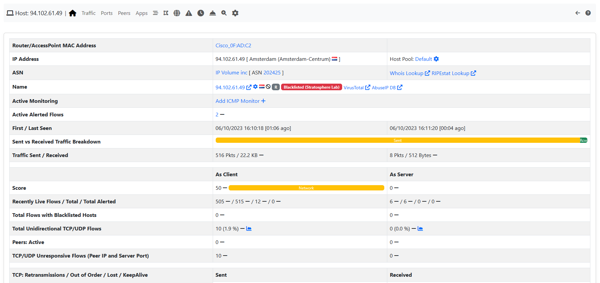
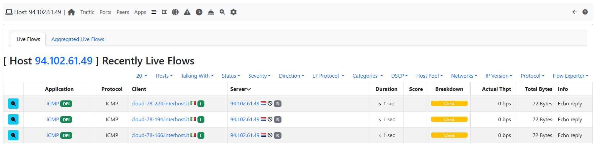

Using ntopng with nProbe Agent
nProbe™ also implements a low-overhead event-based processes monitoring, called agent mode, by leveraging on technologies such as eBPF. nProbe™ in agent mode enhances network visibility by means of system introspection. It enriches classical network data such as IP addresses, bytes and packets with system-introspected processes, users, containers, orchestrators, and other performance indicators.
ntopng can be used to analyse and visualize process data that has been generated by nProbe. The picture below shows how they can be combined together.

Using nProbe in Agent mode with ntopng
Following is a minimal, working, configuration example of nProbe in agent mode and ntopng to obtain what has been sketched in the picture above. The example assumes both ntopng and nProbe are running on the same (local) host. In case they run on separate machines, the IP address 127.0.0.1 has to be changed with the address of the machine hosting ntopng. You can even run multiple nprobe agents and let them export to the same instance of ntopng.
ntopng Configuration
ntopng -i tcp://*:1234c -m "192.168.1.0/24"
Where:
-i specifies on which port ntopng has to listen for incoming data (see the port is 1234, the same used for nprobe below)
-m specifies the local network of interest.
nProbe Agent Configuration
nprobe -i eno1 -n none --agent-mode --zmq tcp://127.0.0.1:1234 --zmq-probe-mode
Where:
–zmq specifies the ntopng ZMQ endpoint
–zmq-probe-mode specifies that nProbe will open the connection towards ntopng
–agent-mode sets the Agent mode to enable process monitoring.
Use Cases
This section contains a few use cases for nProbe Agent and its integration with ntopng.
Trace-Back Users and Processes Behind Network Activities
Finding the user who tried to download a file from a malware host, or Which process is he/she running, is one of the questions ntopng can answer when used in combination with nProbe™ Agent.
Let’s say you have detected certain flows towards a blacklisted host.

nProbe Agent and blacklisted hosts
Just by looking at the flows list you can easily spot the responsible which turns out to be user root attempting to perform a download using process curl.

nProbe Agent: blacklisted host flows
At this point, it is possible to perform an additional drill down by clicking on the flow Info and then Overview to get to the process and user ids, along with other details.

nProbe Agent: blacklisted host flow details
Per-Container and Per-POD Network Activity and Performance Indicators
Checking the the performance of a given container, or spotting the true bottlenecks in a OS-virtualized infrastructure, is another question ntopng can answer using it in combination with nProbe™ Agent. It is possible to uncover container activities and performance using, for example, the measured Round-Trip times of their communications.
It is possible to access the containers list through the Hosts -> Containers menu.

nProbe Agent: containers list
The same applies to Pods: it is possible to access the PODs list through the Hosts -> Pods menu.

nProbe Agent: Pods list